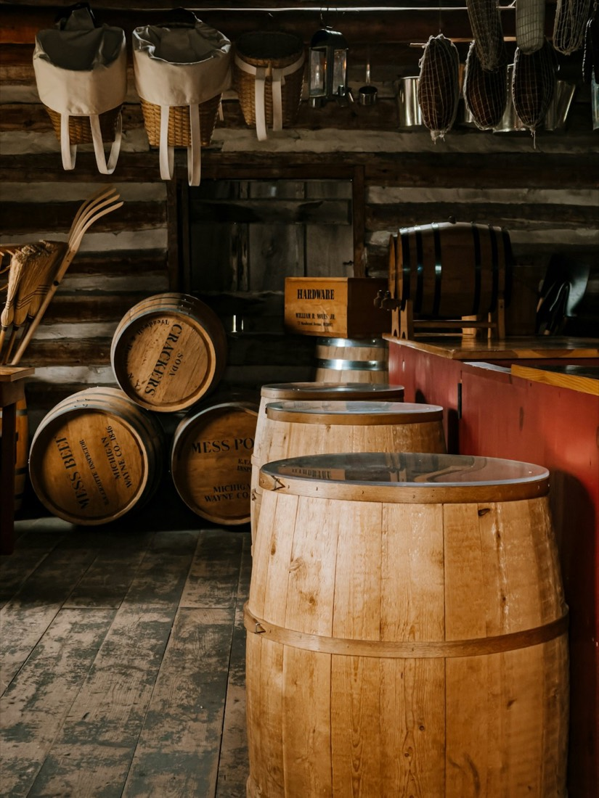
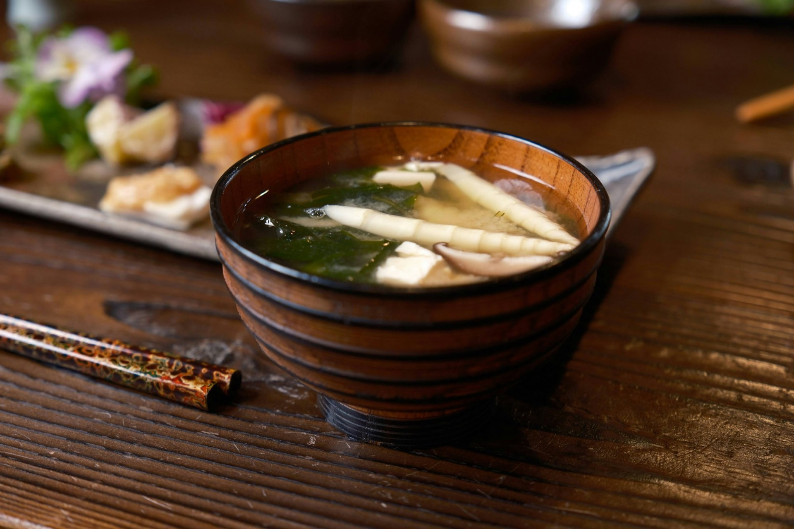
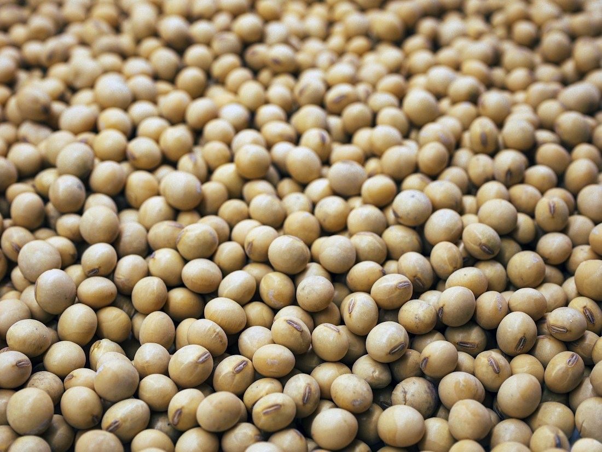
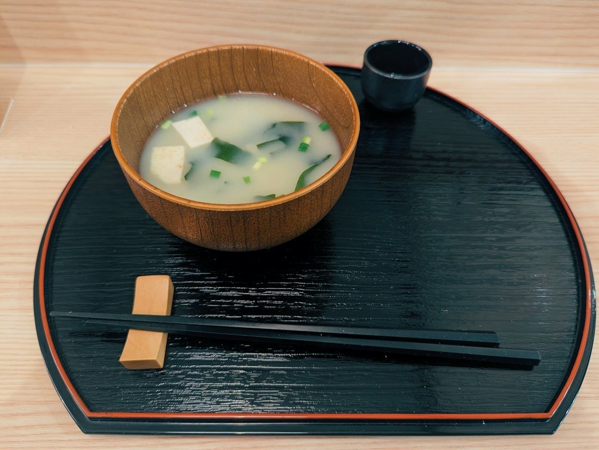
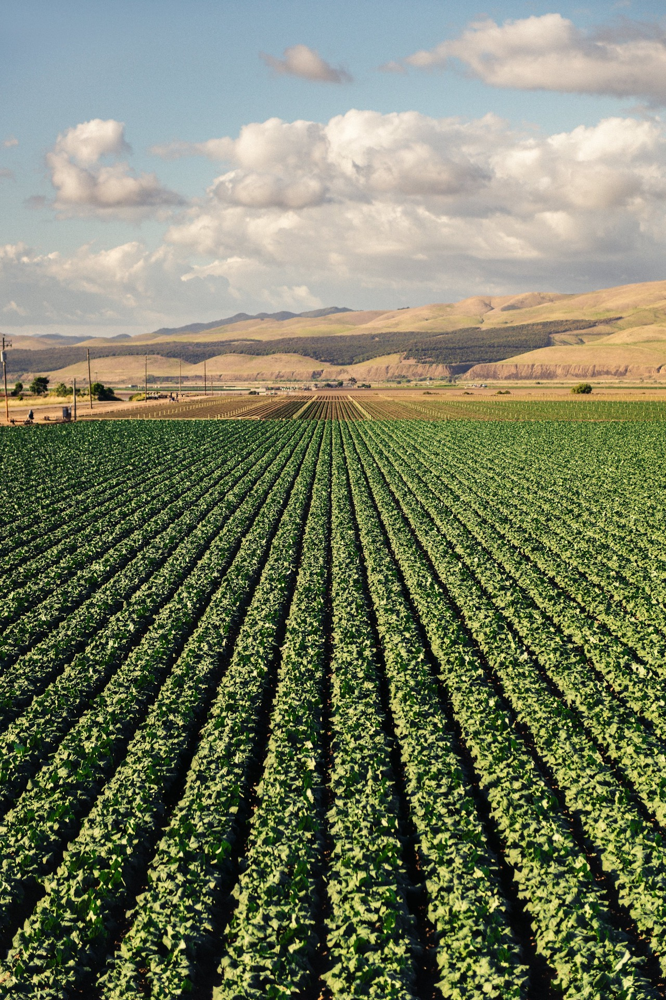

寒仕込み
寒の厳しい冬に仕込みます。農業と同じく、自然と生き物が相手です。

安曇野三年みそ 醸造元 長野県安曇野市穂高有明
信州安曇野穂高、有明山麓で米と大豆を栽培し、農業のかたわら、天然醸造で昔ながらの手造り味噌の醸造を続けています。
安曇野三年みそ
0年冬
寒の厳しい冬に、木桶へ仕込みます。
味噌の熟成の3Dイメージです。色の変わり方は目安です
人工的な作る「手作り」ではなく、醸造による「手造り」味噌です。味噌工場ではなく、言わば味噌（醗）酵場なのです。
加温で醸造を促すことなく、安曇野の気候風土の中で、季節の移り変わりを経てゆっくり熟成させることで、塩カドがとれてまろやかになり、独特なコクや香り、旨味が生まれます。

寒の厳しい冬に仕込みます。農業と同じく、自然と生き物が相手です。

伝統的な手作業で製麹を管理する、室蓋製法のこうじを全量使っています。

和釜と甑で蒸した大豆をつぶし、麹と塩を併せて木桶に仕込みます。

| お問い合わせ | お電話・FAX・メールで承ります |
|---|---|
| 郵便振替 | 00570-6-5678 |
ご用命をお待ちしております。